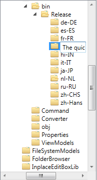
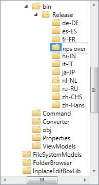
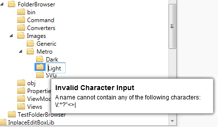

The edit-in-place text control contained in this project can be used as a base for developing applications where users would like to edit text strings as overlay over the normally displayed string.
The best and well known example of an edit-in-place text control is the textbox overlay that is used for renaming renaming a file or folder in Windows Explorer. The user typically selects an item in a list (listbox, listview, grid) or structure of items (treeview) and renames the item using a textbox overlay (without an additional dialog).
Change of focus (activation of a different window), pressing escapee leads to canceling of the rename process and pressing enter leads to confirmation of the new string.
This edit-in-place control in this project can be used in the collection of any ItemsControl (Treeview, ListBox, ListView etc).
The edit-in-place control has 2 string properties, one is for display (DisplayText) and the other (Text) string represents the value that should be edited.
This setup enables application developers to show more than just a name in each item. Each item can, for example, display a name and a number by using the DisplayText property, while the Text property should contain the string that is to be edit.
The confirmation of editing does not change either of the above dependency properties. The edit-in-place control executes instead the command that is bound to the RenameCommand dependency property to let the viewmodel adjust all relevant strings.
The view generates a command parameter of this command (cannot be configured). The parameter is a Tuple of the new string and the viewmodel instance that is available at the DataContext of the edit-in-place control.
The edit-in-place control expects the viewmodel to implement the InplaceEditBoxLib.Interfaces.IEditBox interface which contains a RequestEdit event. This event can be fired by the viewmodel to start editing of a given item.
The user can 'double click' a (treeview or listbox) item, -or he can use a context menu entry that is linked to a corresponding viewmodel command (see StartRenameCommand), which fires the RequestEdit event.
The EditBox in-place overlay control should not exceed the view port area of the parent scrollviewer of the items control. That is, the EditBox should not exceed the visible area of a treeview if it was used within a treeview. This rule ensure that users do not end up typing in an invisible area (off-screen) when typing long string in small areas.
The following sequence of images shows the application behavior when the user enters the string 'The quick fox jumps over the river' in a limited space scenario:


Editing text with the edit-in-place control can be canceled by pressing the 'Esc' key or changing the input focus to another windows or control. The application shows the text as it was before the editing started.
Editing text can be confirmed pressing the enter key. The application shows the entered text instead of the text before the editing started.
The edit-in-place control supports a Boolean IsReadonly dependency property to lock individual items from being renamed. Default is false meaning every item is editable unless binding defines somtheing else.
Editing the string that is displayed with the edit-in-place control can be triggered with a time 'double click'. This double click can be configured to occur in a certain time frame. There are 2 double dependency properties that can be setup to consume only those double clicks with a time frame that is larger than MinimumClickTime but smaller than MaximumClickTime.
Default values for MinimumClickTime and MaximumClickTime are 300 ms and 700 ms, respectively.
The IsEditableOnDoubleClick boolean dependency property can be setup to dermine whether double clicks are evaluated for editing or not. Default is true.
The edit-in-place control supports a one way Boolean IsEditing dependency property to enable viewmodels to determine whether an item is currently edited or not. This property cannot be used by the viewmodel to force the view into editable mode (since it is a get only property in the view). Use the RequestEdit event defined in InplaceEditBoxLib.Interfaces.IEditBox to request an edit mode that is initialized by the viewmodel.
The EditBox control contains properties that can be used to define a blacklist of characters that should not be input by the user. See properties:
The control implements a pop-up message element to show hints to the user if he types invalid characters.

Pressing F2 Key on a selected Treeview item does not start the editing mode (tried several alternative solution but cannot find one that works, please let me know if you have a working solution).
Clicking on the background of the ItemsControl (TreeView, ListView etc) does not cancel the edit mode (I would like to implement this but do not have a solution).
Key definitions entered in the in-place textbox cannot be defined through a white-list. The textbox does not support input masks.
Restyling TextBox with Hyperlink does not work since a Hyperlink is stored in the InlineCollection of a TextBox. But an InlineCollection cannot be set via dependency property and I cannot seem to work around this with a custom dependency property.
Thanks to Joseph Leung for coaching me along the way
This code uses part of ATC Avalon Team's work: http://blogs.msdn.com/atcavalonteam/archive/2006/03/14/550934.aspx
CodeProject Article "Editable TextBlock in WPF for In-place Editing" http://www.codeproject.com/Articles/31592/Editable-TextBlock-in-WPF-for-In-place-Editing?fid=1532208&df=90&mpp=25&noise=3&prof=False&sort=Position&view=Normal&spc=Relaxed&fr=26#xx0xx